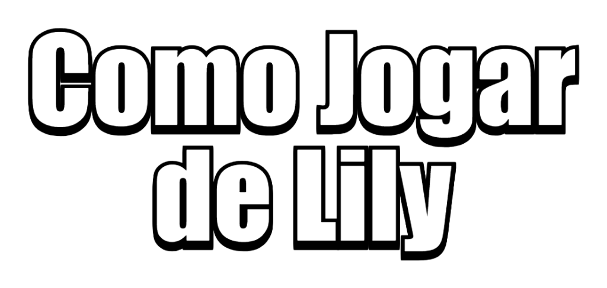
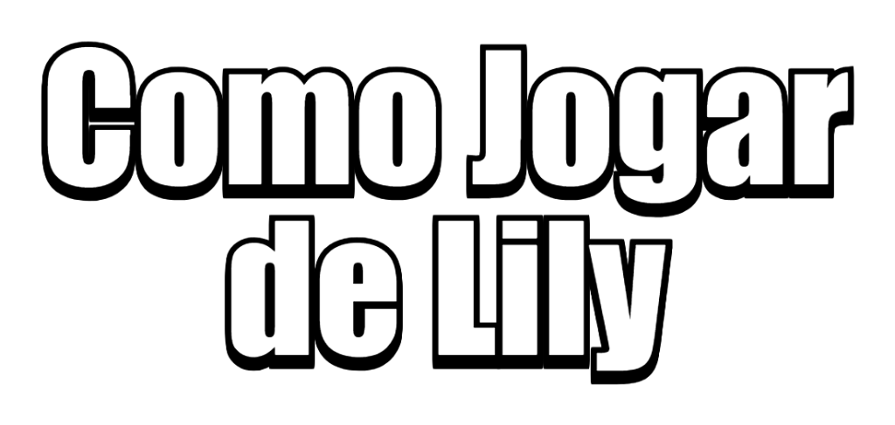
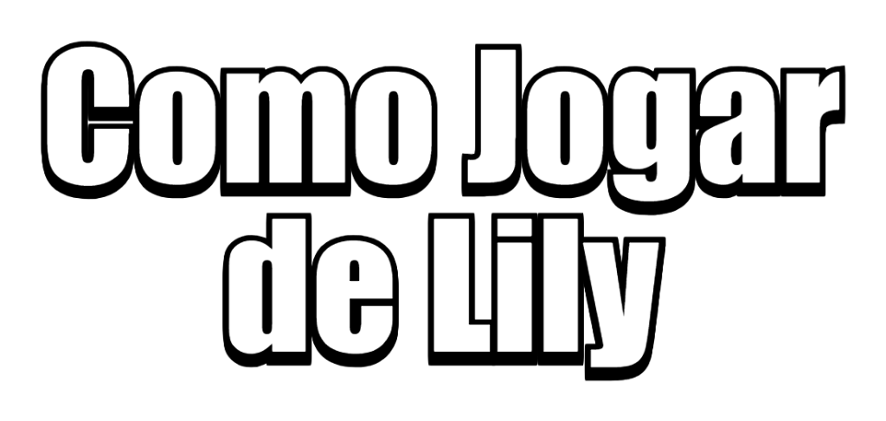
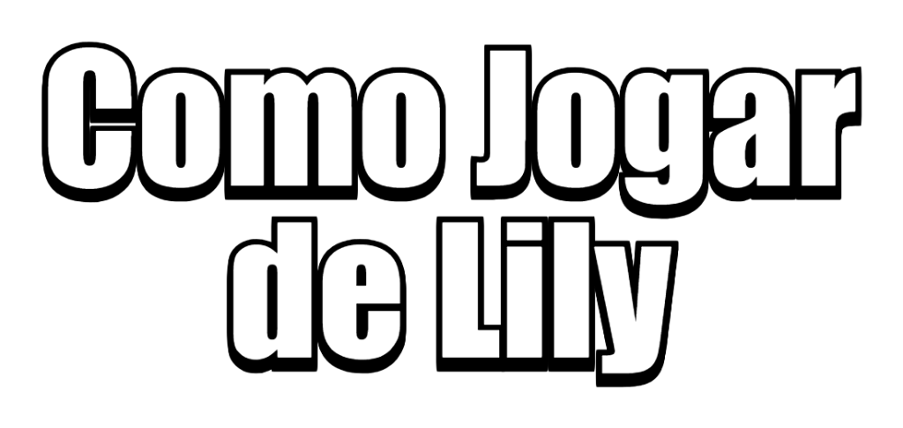

Raridade: Mítico
Classe: Algoz
Título: Pelas costas
Trio: Floresta Encantada (Cordelius, Trunk e Lily)
Ataque: Espinhosa:
Usando seus espinhos para causar dano, Lily golpeia
quem estiver pela frente.
Super: Tocaia:
Arremessa uma semente para frente. Se atingir um inimigo,
Lily se teletransporta para trás do adversário.
Atributo: O super é carregado quando o Brawler fica perto dos advesários.
Descrição:
Lily é uma nerd raiz bem sombria. Em busca de conhecimento,
foi à floresta encantada, onde teve um encontro inusitado com
um vaga-lume e uma planta carnívora. Depois disso, sua vida
nunca mais foi a mesma...
| ATAQUE | |
|---|---|
| Dano | 2120 |
| Alcance | Curto |
| Velocidade de Recarga | Muito rápida | SUPER |
| Dano | 1000 |
| Alcance | Longo | OUTROS |
| Saúde | 8400 |
| Velocidade de Movimento | Muito rápida |
Para conseguir jogar bem de Lily é importante saber como ela funciona, suas mecânicas e como se portar com ela dentro das partidas. Ela é excelente em mapas fechados, porém fraca em mapas abertos, ela também rende em mapas abertos no centro e com gramas nas laterais. Você precisa saber usar o cenário a seu favor, se esconda nos arbustos e fique atrás das paredes próximo de seus inimigos para carregar a super, use o seu acessório para se aproximar e fazer kills, a Lily é um Brawler furtivo, então mantenha sua localização em segredo durante a partida, você tem que pega-los desprevinidos. Use seu acessório para avançar pelo mapa, indo de arbusto em arbusto, e quando ver que dá, "dar o bote" no adversário, com a super ou o encurralando.


A lily é excelente contra Brawlers que:


A Lily não é boa contra Brawlers que:

COMBATE:
O modo Combate é perfeito para ela. Ela consegue escapar de situações perigosas com falicidade
utilizando o acessório, consegue checar os arbustos com mais segurança usando o seu atributo de
carregar a super (se já estiver carregada também pode usar a Hipercarga como referência). Ela se
aproxima fácil dos adversários e se aproveitar de brigas, indo pra cima dos Brawlers com pouca vida.
Nota: 10
PIQUE-GEMA:
Ela é completa nesse modo. Se estiver ganhando, pode fugir com facilidade, com o acessório sendo
muito útil para se esconder e pegar os adversários de surpresa, roubando as gemas. Se estiver perdendo,
pode usar a Hipercarga e o acessório para recuperar as gemas.
Nota: 9

NOCAUTE:
Ela consegue render, mas normalmente vai depender muito da equipe adversária, se cairem Brawlers
counters provalmente não vai ter um bom desempenho. Ela consegue fazer kills com facilidade e também
finalizar Brawlers com pouca vida. É um bom elemento surpresa.
Nota: 8
CAÇA-ESTRELA:
É preciso jogar com cautela, não se expor muito e aproveitar as oportunidades de avançar, usar a super
para garantir as kills e acessório para evitar morrer a toa. Assim como o nocaute, os brawlers da equipe
adversária contam muito para o desempenho, se não cair Brawlers que ela leve vantagem, pode ficar
um pouco apagada da partida.
Nota: 7
FUTE-BRAWL:
Ela consegue fazer boas jogadas, algumas mais complexas com acessório, consegue defender. É jogavel,
mas não explora todas as qualidades dela, usar o acessório as vezes pode deixar seu time em desvantagem,
pois ficarão com um a menos durante um tempo, então use-o com cautela.
Nota: 6


Acessório: Sumiço
Lily entra no Vale das Sombras por 3 segundos.
Tempo de espera: 22 segundos.
Engrenagem: Recarga de Acessório
Reduz o tempo de recarga do acessório em 15%.
Engrenagem: Escudo
Ganha 900 pontos de vida extra como escudo.
O escudo se regenera em 10 segundos com 100% de saúde.
Engrenagem: Dano
Causa 15% de dano extra quando Brawler
estiver com menos de 50% de saúde.
Poder de Estrela: Superperfuração
Depois de se teletransportar em direção a um inimigo,
o próximo ataque de Lily causa 1060 a mais de dano.
Hipercarga: Germinada
O ataque Tocaia rebate nos muros e transporta a Lily
e os inimigos para o Vale das Sombras por 5 segundos.
Velocidade +20%
Dano +5%
Escudo +5%